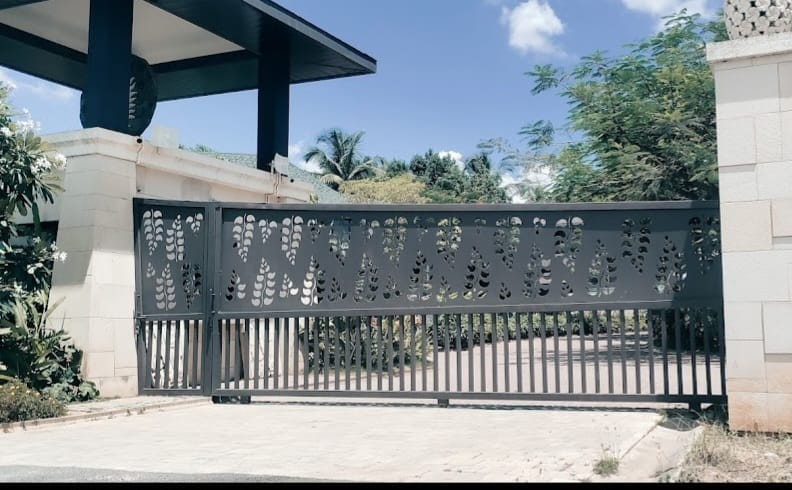

Smooth access, without the swing
Sliding gates
A sliding gate travels sideways along a track or guided path instead of swinging into the driveway. It can be a practical choice when a home has limited space inside or outside the entrance.
Discuss your project →How it can help
Made for your space and routine.
A motorized sliding gate lets you operate the entrance with less manual effort. We can discuss dimensions, layout and a suitable design for your property.

Planning a home or site entrance?
Tell us what you are building and what you need.
Hitesh Industries
No. 44, Manjunatha Layout, Segehalli Road,
Magadi Main Road, Bangalore - 560 091